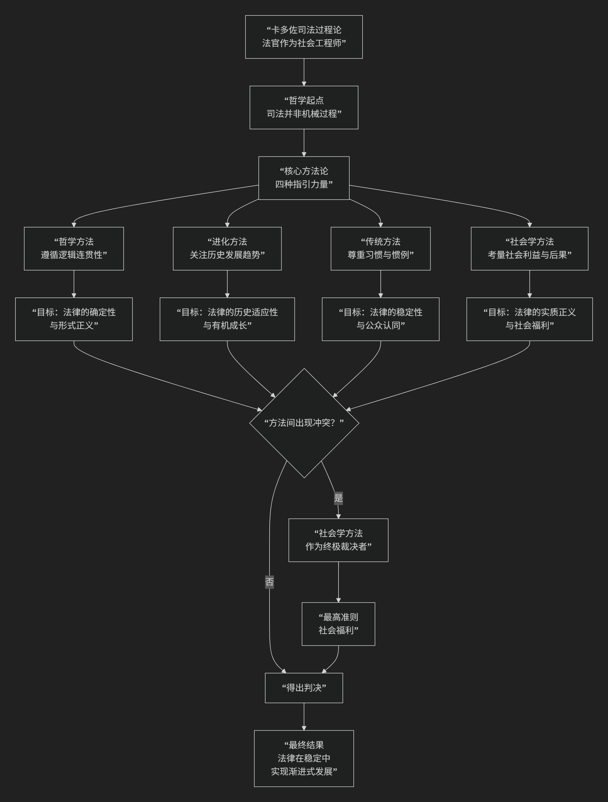

Benjamin Nathan Cardozo
基于本杰明·内森·卡多佐（Benjamin Nathan Cardozo）司法过程论核心思想
本杰明·N·卡多佐是美国历史上最具影响力的法学家之一，其司法过程论的核心思想可以概括为：一种坦诚、精细且富有社会责任感的法官裁判方法论。它坚决反对将司法视为机械适用法律的“自动售货机”，转而主张法官在遵循先例的前提下，应通过一种多元、动态的方法，有意识地考量判决的社会后果，使法律的发展能够适应社会生活的需要，最终实现“社会福利”这一终极目标。
卡多佐的思想精髓在于揭示了法官裁判过程中的创造性维度，其核心方法论体系可以通过下图清晰地展现其内在逻辑与动态过程：

以下，我们将沿此逻辑脉络，深入解析卡多佐司法过程论的核心要义。
一、哲学起点：司法不是发现而是创造的过程
卡多佐的理论始于对传统形式主义司法观的批判。他反对那种认为法官只是“法律宣示者”的被动角色。
核心洞见：在大量的案件中，法律规则是清晰的，法官只需通过逻辑演绎即可裁判（他称之为“分析法”或“哲学方法”）。然而，在那些 真正重要的、开创先例的案件中，法律存在空白、模糊或冲突。此时，法官 无法避免地行使着创造性的选择权。
著名比喻：法官不是在 发现 早已存在的法律路径，而是在 塑造 和 **建造**这 条路径。司法过程是一种有意识的、负责任的立法活动。
二、核心方法论：法官裁判的四种指引力量
卡多佐在其代表作《司法过程的性质》中，系统阐述了法官作出一项判决时所依循的四种方法，它们构成一个有机的、有优先次序的体系：
哲学方法（逻辑方法）
内容：遵循先例，通过 逻辑上的类比、演绎，保证法律原则的统一性、连续性和确定性。这是最常用、最基本的方法。
价值：满足社会对 稳定性和可预测性 的渴望。
局限：当逻辑推理导致明显不公正或过时的结论时，就不能盲目遵循。
进化方法（历史方法）
内容：考察某一法律原则的 历史起源和发展轨迹，使其演变符合历史的趋势。
价值：确保法律能够 有机地成长，而非僵化不变。
传统方法（习惯方法）
内容：尊重和采纳 社会通行的习惯、商业惯例和普遍的道德观念。
价值：使法律规则建立在坚实的 社会共识 基础上，增强其生命力和可接受度。
社会学方法（目的方法）——最具卡多佐特色
内容：有意识地考量判决可能带来的社会后果，评估不同判决方案对社会利益、社会需求和社会进步的影响。
价值：这是实现 司法正义最直接、最有效的工具。当其他方法指向不同结论时，社会学方法通常具有 优先地位。
三、终极准则：社会福利
卡多佐理论中最著名的，是他将“社会福利”确立为司法过程的终极目标和最高准则。
社会福利的内涵：它并非狭义的物质利益，而是一个宽泛的概念，指 社会的和谐、有序、进步以及共同体成员的福祉。它包括了社会道德、公共政策、经济需求等。
核心作用：当逻辑、历史、习惯等方法无法提供明确指引或相互冲突时，“社会福利”就成为 最终的裁决者。法官应选择那个最能促进社会福利的判决方案。
四、法官的角色：有意识的社会工程师
基于上述方法论，卡多佐重新定义了法官的角色。
从“自动售货机”到“社会工程师”：法官不应掩饰自己的创造性角色，而应 坦诚地承认并负责任地行使 这种权力。他是一位“社会工程师”，其职责是运用法律工具来调整社会关系，促进社会福祉。
自由裁量的界限：这种创造性权力并非恣意妄为。它受到 先例、法律原则、职业传统和社会共识 的严格约束。法官的“造法”是“填补缝隙”式的、渐进式的，而非推倒重来。
五、核心要义总结
理论维度 |
核心命题 |
关键概念与贡献 |
|---|---|---|
司法性质论 |
司法过程，尤其在疑难案件中，是法官有意识地塑造法律的创造性活动。 |
司法创造性、反对机械法学、法官造法 |
方法论体系 |
法官应综合运用哲学、进化、传统和社会学四种方法进行裁判。 |
四种方法、方法的优先次序、动态平衡 |
终极准则 |
“社会福利”是司法过程的最高目标，是解决方法冲突的最终依据。 |
社会福利、社会利益、后果考量 |
法官角色论 |
法官是负责任的”社会工程师”，其自由裁量权受法律传统约束。 |
社会工程师、受约束的创造力、渐进式发展 |
六、思想特质与影响
坦诚与精细：卡多佐毫不掩饰司法的创造性本质，但又为这种创造性提供了一套精细、可操作的方法论约束，避免了主观臆断的批评。
平衡与务实：他的理论在 法律的确定性与灵活性、稳定性与进步性、逻辑与正义 之间取得了极佳的平衡。
深远影响：卡多佐的司法过程论深刻影响了美国的司法实践，为司法能动主义提供了有力的理论支持，同时也设定了理性的边界。他让法官们意识到，一个伟大的判决，不仅是逻辑的胜利，更是对社会福祉的深刻关怀。
七、总结
总而言之，卡多佐司法过程论的核心思想在于，他是一位 “司法坦诚的倡导者”和“裁判艺术的提炼者” 。他教导我们，司法的伟大不在于隐藏其创造性的本质，而在于为这种创造性活动找到一套负责任、有原则且致力于社会福祉的方法论体系。
他的全部工作是对 司法决策本质 的一次深刻揭示与升华。在法治传统中，他成功地将法官从“法律奴仆”的被动形象，提升为“社会工程师”的积极角色，为法律在稳定中实现与时俱进的发展指明了道路。在这个意义上，他不仅是美国法学的瑰宝，更是世界法律思想史上一位里程碑式的人物。
- Grok
- 基于本杰明·内森·卡多佐司法过程论核心思想的陈京元“寻衅滋事罪”案分析评论
- An Analysis of the Chen Jingyuan “Picking Quarrels and Provoking Trouble” Case Based on Benjamin N. Cardozo’s Core Ideas in the Judicial Process
- 一、卡多佐司法过程论核心思想概述：创造性平衡与四种方法
- I. Overview of Cardozo’s Core Ideas in the Judicial Process: Creative Balance and the Four Methods
- 二、以卡多佐司法过程论核心思想评析本案
- II. Analysis of the Case Based on Cardozo’s Core Ideas in the Judicial Process
- 三、结语：重振司法创造，推动公正新生
- III. Conclusion: Reviving Judicial Creativity for Justice’s Rebirth
- Copilot
- DeepSeek
- ChatGPT
- Gemini
- Qwen